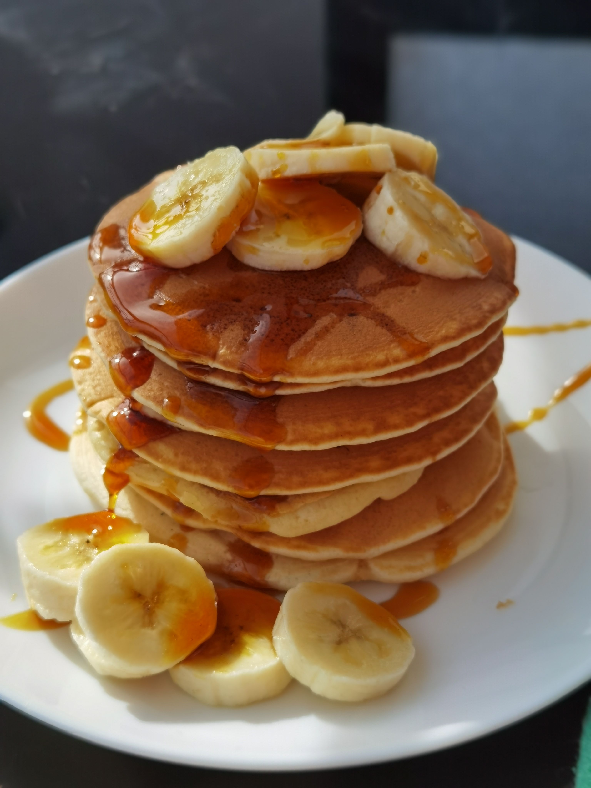

Pancakes

Description
Pancakes are a popular breakfast food made from a smooth, pourable starch-based batter cooked on a hot, flat surface like a griddle or frying pan. They are universally loved for their comforting taste, simple ingredients, and versatile nature.
Ingredients
- Dry Ingredients:
- All-Purpose Flour (Maida): 1 cup
- Baking Powder: 2 tsp
- Sugar: 2 tbsp
- Salt: ¼ tsp
- Wet Ingredients
- Milk: ¾ cup to 1 cup (room temperature)
- Melted Butter or Oil:2 tbsp (plus extra for greasing the pan)
- Egg: 1 large (or substitute with ¼ cup yogurt/curd for an eggless version)
- Vanilla Extract: 1 tsp
Steps
- Mix Dry and Wet Ingredients Separately:
- In a large mixing bowl, whisk together the flour, baking powder, sugar, and salt.
- In a separate bowl, whisk together the milk, egg (or yogurt), melted butter, and vanilla extract until well combined.
- Combine to Form Batter:
- Pour the wet mixture into the dry ingredients.
- Gently fold together with a spatula or whisk just until combined. Do not overmix—a few small lumps are completely fine and keep the pancakes fluffy.
- Let the batter rest for 5-10 minutes so the baking powder activates.
- Cook the Pancakes:
- Heat a non-stick pan or skillet over medium-low heat and grease lightly with a little butter.
- Pour about ¼ cup of batter onto the hot pan for each pancake.
- Cook for 2-3 minutes until bubbles form on the surface and the edges look set.
- Flip gently with a spatula and cook the other side for another 1-2 minutes until golden brown.
Home